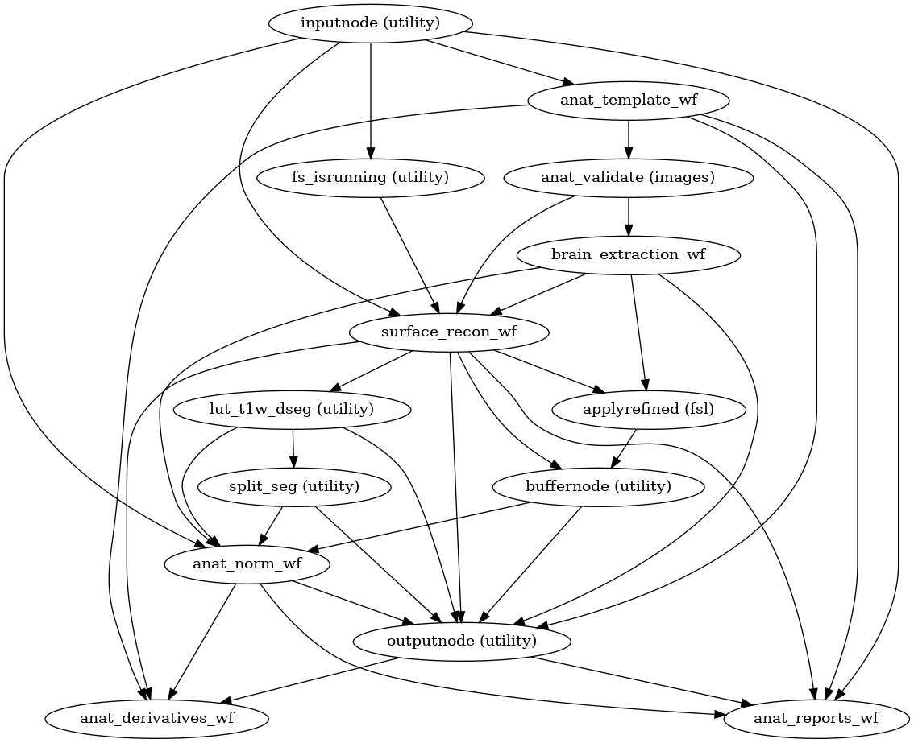
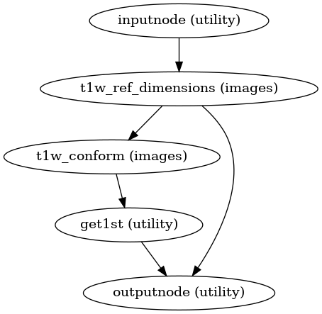

smriprep.workflows.anatomical module¶
Anatomical reference preprocessing workflows.
-
smriprep.workflows.anatomical.init_anat_preproc_wf(*, bids_root, freesurfer, hires, longitudinal, t1w, omp_nthreads, output_dir, skull_strip_mode, skull_strip_template, spaces, debug=False, existing_derivatives=None, name='anat_preproc_wf', skull_strip_fixed_seed=False)¶ Stage the anatomical preprocessing steps of sMRIPrep.
This includes:
T1w reference: realigning and then averaging T1w images.
Brain extraction and INU (bias field) correction.
Brain tissue segmentation.
Spatial normalization to standard spaces.
Surface reconstruction with FreeSurfer.
- Workflow Graph

(Source code, png, svg, pdf)
- Parameters
bids_root (
str) – Path of the input BIDS dataset rootexisting_derivatives (
dictor None) – Dictionary mapping output specification attribute names and paths to corresponding derivatives.freesurfer (
bool) – Enable FreeSurfer surface reconstruction (increases runtime by 6h, at the very least)hires (
bool) – Enable sub-millimeter preprocessing in FreeSurferlongitudinal (
bool) – Create unbiased structural template, regardless of number of inputs (may increase runtime)t1w (
list) – List of T1-weighted structural images.omp_nthreads (
int) – Maximum number of threads an individual process may useoutput_dir (
str) – Directory in which to save derivativesskull_strip_template (
Reference) – Spatial reference to use in atlas-based brain extraction.spaces (
SpatialReferences) – Object containing standard and nonstandard space specifications.debug (
bool) – Enable debugging outputsname (
str, optional) – Workflow name (default: anat_preproc_wf)skull_strip_mode (
str) – Determiner for T1-weighted skull stripping (force ensures skull stripping, skip ignores skull stripping, and auto automatically ignores skull stripping if pre-stripped brains are detected).skull_strip_fixed_seed (
bool) – Do not use a random seed for skull-stripping - will ensure run-to-run replicability when used with –omp-nthreads 1 (default:False).
- Inputs
t1w – List of T1-weighted structural images
t2w – List of T2-weighted structural images
roi – A mask to exclude regions during standardization
flair – List of FLAIR images
subjects_dir – FreeSurfer SUBJECTS_DIR
subject_id – FreeSurfer subject ID
- Outputs
t1w_preproc – The T1w reference map, which is calculated as the average of bias-corrected and preprocessed T1w images, defining the anatomical space.
t1w_brain – Skull-stripped
t1w_preproct1w_mask – Brain (binary) mask estimated by brain extraction.
t1w_dseg – Brain tissue segmentation of the preprocessed structural image, including gray-matter (GM), white-matter (WM) and cerebrospinal fluid (CSF).
t1w_tpms – List of tissue probability maps corresponding to
t1w_dseg.std_preproc – T1w reference resampled in one or more standard spaces.
std_mask – Mask of skull-stripped template, in MNI space
std_dseg – Segmentation, resampled into MNI space
std_tpms – List of tissue probability maps in MNI space
subjects_dir – FreeSurfer SUBJECTS_DIR
anat2std_xfm – Nonlinear spatial transform to resample imaging data given in anatomical space into standard space.
std2anat_xfm – Inverse transform of the above.
subject_id – FreeSurfer subject ID
t1w2fsnative_xfm – LTA-style affine matrix translating from T1w to FreeSurfer-conformed subject space
fsnative2t1w_xfm – LTA-style affine matrix translating from FreeSurfer-conformed subject space to T1w
surfaces – GIFTI surfaces (gray/white boundary, midthickness, pial, inflated)
{kind=link}
{kind=link}
-
smriprep.workflows.anatomical.init_anat_template_wf(*, longitudinal, omp_nthreads, num_t1w, name='anat_template_wf')¶ Generate a canonically-oriented, structural average from all input T1w images.
- Workflow Graph

(Source code, png, svg, pdf)
- Parameters
- Inputs
t1w – List of T1-weighted structural images
- Outputs
t1w_ref – Structural reference averaging input T1w images, defining the T1w space.
t1w_realign_xfm – List of affine transforms to realign input T1w images
out_report – Conformation report
{kind=link}
{kind=link}